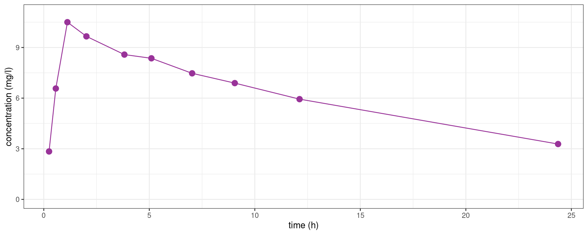
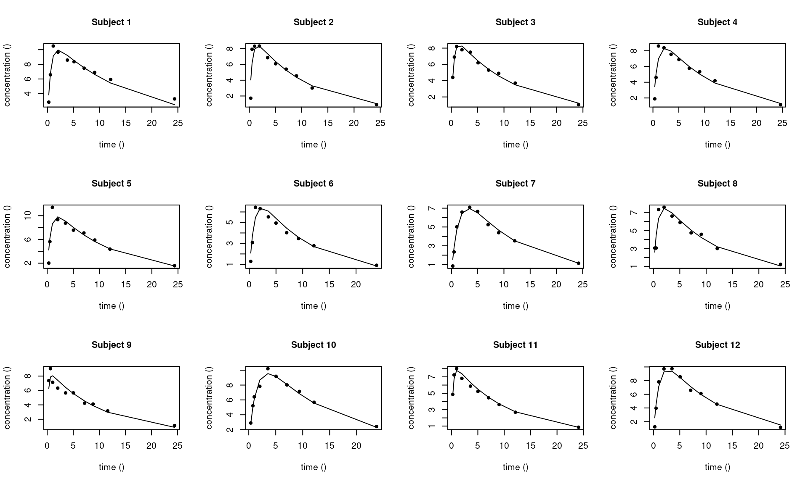

library(tidyverse)
library(ggfortify)
library(lme4)
library(saemix)
library(lattice)
theme_set(theme_bw())Nonlinear Mixed Effects Models
Preliminary
Functions from R-base and stats (preloaded) are required plus packages from the tidyverse for data representation and manipulation. We also need the lme4 and saemix package for fitting (nonlinear) mixed-model. lattice is used for graphical representation of quantities such as random and fixed effects in the mixed models.
1 Introduction: the theophylline data set
The theophyllineData file reports data from a study of the kinetics of the anti-asthmatic drug theophylline. Twelve subjects were given oral doses of theophylline then serum concentrations were measured at 11 time points over the next 25 hours.
theophylline <- read_csv("../../data/theophyllineData.csv") %>% mutate(id = factor(id))
theophylline %>% rmarkdown::paged_table()Here, time is the time since drug administration when the sample was drawn (h), concentration is the measured theophylline concentration (mg/L) and weight is the weight of the subject (kg).
The 12 subjects received 320 mg of theophylline at time 0.
Let us plot the data, i.e. the concentration versus time:
Show the code
theo_plot <- theophylline %>%
ggplot() + aes(x = time, y = concentration) + geom_point(color="#993399", size=2) +
xlab("time (h)") + ylab("concentration (mg/l)")
theo_plot + geom_line(color="#993399", aes(group = id))We can also plot the 12 individual concentration profiles on 12 separated plots,
Show the code
theo_plot + geom_line() + facet_wrap( ~ id)The pattern is similar for the 12 individuals: the concentration first increases during the absorption phase and then decreases during the elimination phase. Nevertheless, we clearly see some differences between these profiles which are not only due to the residual errors. In particular, we see that the patients absorb and eliminate the drug more or less rapidly.
A population approach and the use of mixed effects models will allow us to take into account this inter individual variability.
2 Fitting nonlinear models to the data
2.1 Fitting a nonlinear model to a single subject
Let us consider the first subject of this study (id=1)
subject1 <- theophylline %>%
filter(id == 1) %>% select("time","concentration")
subject1_plot <- subject1 %>%
ggplot() + aes(x = time, y = concentration) + geom_point( color="#993399", size=3) +
xlab("time (h)") + ylab("concentration (mg/l)") + ylim(c(0,11))
subject1_plot + geom_line(color="#993399")
We may want to fit a nonlinear model to this data of the form
y_j = f(t_j ,\psi) + \varepsilon_j \quad , \quad 1\leq j \leq n
where (y_j, 1\leq j \leq n) are the n measurements for this subject, f is the model (e.g. from pharmacokinetics), \psi is the vector of parameters for this subject and (\varepsilon_j, 1\leq j \leq n) are residual errors.
A one compartment model with first order absorption and linear elimination to this data writes
f(t_j ,\psi) = \frac{ D \, k_a}{V(k_a-k_e)}\, \left( e^{- k_e \, t} - e^{- k_a \, t} \right)
where \psi=(k_a,V,k_e) are the PK parameters of the model and D is the amount of drug given to the patient (here, D=320mg).
Let us compute the least squares estimate of \psi defined as
\hat\psi = \arg\min_{\psi} \sum_{j=1}^{n} (y_{j} - f(t_{j} ,\psi))^2
We first need to implement the pharmacokinetics (PK) model:
f1 <- function(psi, t){
D <- 320; ka <- psi[1]; V <- psi[2]; ke <- psi[3]
f <- D*ka/V/(ka-ke)*(exp(-ke*t)-exp(-ka*t))
f
}We can then use the nls function for fitting this (nonlinear) model to the data
model_1 <- nls(concentration ~ f1(psi, time), start = list(psi=c(ka=1, V=40, ke=0.1)), data=subject1)
coef(model_1) psi1 psi2 psi3
1.77741125 29.39415966 0.05395458 and plot the predicted concentration f(t,\hat\psi)
Show the code
dplot <- data.frame(time = seq(0, 40, by=0.2))
dplot$pred_1 <- predict(model_1, newdata = dplot)
subject1_plot + geom_line(data = dplot, aes(x = time, y = pred_1), colour = "#339900", linewidth=1)2.2 Fitting a unique nonlinear model to several subjects
Instead of fitting this model to a single patient, we may want to fit the same model to all the patients:
y_{ij} = f(t_{ij} ,\psi) + \varepsilon_{ij} \quad , \quad 1\leq i \leq N \ , \ 1\leq j \leq n_i
where (y_{ij}, 1\leq j \leq n_i) are the n_i measurements for subject i. Here, \psi is the vector of parameters shared by the N subjects.
In this model, the least squares estimate of \psi is defined as
\hat\psi = \arg\min_{\psi} \sum_{i=1}^N \sum_{j=1}^{n_i} (y_{ij} - f(t_{ij} ,\psi))^2
Let use the nls function with the pooled data from the 12 subjects.
model_all <- nls(concentration ~ f1(psi, time), start = list(psi=c(ka=1, V=40, ke=0.1)), data=theophylline)
coef(model_all) psi1 psi2 psi3
1.57975379 33.42183648 0.07931028 Show the code
dplot$pred_all <- predict(model_all, newdata = dplot)
theo_plot + geom_line(data = dplot, aes(x = time, y = pred_all), colour="#339900", size=1)These estimated parameters are typical parameters and this profile is a typical profile for this sample of patients: by definition, they do not take into account the variability between the patients and therefore do not provide good individual predictions.
Show the code
theo_plot +
geom_line(data = dplot, aes(x = time, y=pred_all), colour="#339900", linewidth=1) +
facet_wrap(~ id)2.3 Fitting several nonlinear models to several subjects
We can instead fit the same PK model with different parameters to each subject, exactly a we did above with the first patient:
y_{ij} = f(t_{ij} ,\psi_i) + \varepsilon_{ij} \quad , \quad 1\leq i \leq N \ , \ 1\leq j \leq n_i
where \psi_i is the vector of parameters for patient i.
In this model, the least squares estimate of \psi_i is defined as
\hat\psi_i = \arg\min_{\psi} \sum_{j=1}^{n_i} \Big(y_{ij} - f(t_{ij} ,\psi)\Big)^2 \quad , \quad 1\leq i \leq N
Each individual predicted concentration f(t,\hat\psi_i) seems to predict quite well the observed concentrations for the 12 subjects:
Show the code
res <- split(theophylline, theophylline$id) %>%
map(~{
model_i <- nls(concentration ~ f1(psi, time),
start = list(psi=c(ka=1, V=40,k=0.08)),
data = .x)
list(psi = coef(model_i),
y_hat = predict(model_i, newdata = dplot),
id = unique(.x$id))
})
psi_hat <- map_df(res, "psi") %>%
setNames(c("ka","V","ke")) %>%
add_column(id = factor(map_dbl(res, "id")))
theo_pred <-
map_df(res, "y_hat") %>%
pivot_longer(everything(), names_to = "id", values_to = "concentration") %>%
add_column(time = rep(dplot$time, each = length(res)))
theo_plot + geom_line(data = theo_pred, aes(x=time,y=concentration), colour="#339900", size=0.75) + facet_wrap(~id)For instance for individual 9,
model_9 <- nls(concentration ~ f1(psi, time), start = list(psi=c(ka=1, V=40,k=0.08)),
data = filter(theophylline, id == 9))
model_9Nonlinear regression model
model: concentration ~ f1(psi, time)
data: filter(theophylline, id == 9)
psi1 psi2 psi3
8.86564 38.94820 0.08663
residual sum-of-squares: 2.489
Number of iterations to convergence: 13
Achieved convergence tolerance: 3.749e-063 Nonlinear mixed effects (NLME) model
3.1 A first basic model
Until now, the individual parameters (\psi_i) were considered as fixed effects: we didnt make any assumption about there possible values.
In a population approach, the N subjects are assumed to be randomly sampled from a same population of individuals. Then, each individual parameter \psi_i is treated as a random variable.
We will start assuming that the \psi_is are independent and normally distributed:
\psi_i \sim^{\mathrm{iid}} \mathcal{N}(\psi_{\rm pop} , \Omega)
where \psi_{\rm pop} is a p-vector of population parameters and \Omega a p\times p variance-covariance matrix.
Remark. This normality assumption allows us to decompose each individual parameter \psi_i into a fixed effect \psi_{\rm pop} and a random effect \eta_i:
\psi_i = \psi_{\rm pop} + \eta_i
where \eta_i \sim^{\mathrm{iid}} \mathcal{N}(0 , \Omega).
We will also start assuming that the residual errors (\varepsilon_{ij}) are independent and normally distributed: \varepsilon_{ij} \sim^{\mathrm{iid}} \mathcal{N}(0 , a^2).
In summary, we can equivalently represent a (nonlinear) mixed effects model
i) using equations:
\begin{aligned} y_{ij} & = f(t_{ij} ,\psi_i) + \varepsilon_{ij} \\ \psi_i & = \psi_{\rm pop} + \eta_i \end{aligned} where \varepsilon_{ij} \sim^{\mathrm{iid}} \mathcal{N}(0 , a^2) and \eta_i \sim^{\mathrm{iid}} \mathcal{N}(0 , \Omega),
ii) or using probability distributions:
\begin{aligned} y_{ij} &\sim \mathcal{N}(f(t_{ij} ,\psi_i) \ , \ a^2) \\ \psi_i & \sim \mathcal{N}(\psi_{\rm pop} , \Omega) \end{aligned}
The model is the joint probability distribution of (y,\psi), where y=(y_{ij}, 1\leq i \leq N, 1 \leq j \leq n_i) is the complete set of observations and \psi = (\psi_i, 1\leq i \leq N) the N vectors of individual parameters,
\begin{aligned} \mathbb{P}(y,\psi;\theta) &= <\prod_{i=1}^N \mathbb{P}(y_i,\psi_i;\theta) \\ &= \prod_{i=1}^N \mathbb{P}(y_i|\psi_i;\theta)\mathbb{P}(\psi_i;\theta) \end{aligned}
3.2 Tasks, methods and algorithms
A detailed presentation of all the existing methods and algorithms for nonlinear mixed effect models goes far beyond the scope of this course. We will restrict ourselves to the methods and algorithms implemented in the saemix package.
3.2.1 Estimation of the population parameters
The parameters of the model are \theta=(\psi_{\rm pop}, \Omega, a^2). Maximum likelihood estimation of \theta consists of maximizing with respect to \theta the observed likelihood function defined by
\begin{aligned} \ell(\theta,y) &\triangleq \mathbb{P}(y ; \theta) \\ &= \int \mathbb{P}(y,\psi ;\theta) \, d \psi \\ &= \prod_{i=1}^N\int \mathbb{P}(y_i|\psi_i ;\theta)\mathbb{P}(\psi_i ;\theta) \, d \psi_i . \end{aligned}
If f is a nonlinear function of \psi_i, then y_i is not a Gaussian vector and the likelihood function \ell(\theta,y) cannot be computed in a closed form.
Several algorithms exists for maximum likelihood estimation in nonlinear mixed effects models. In particular, the stochastic approximation EM algorithm (SAEM) is an iterative algorithm that converges to a maximum of the likelihood function under general conditions.
3.2.2 Estimation of the individual parameters
Once \theta has been estimated, the conditional distribution \mathbb{P}(\psi_i | y_i ; \hat{\theta}) can be used for each individual i for estimating the vector of individual parameters \psi_i.
The mode of this conditional distribution is defined as
\begin{aligned} \hat{\psi}_i &= \arg\max_{\psi_i}\mathbb{P}(\psi_i | y_i ; \hat{\theta}) \\ &= \arg\min_{\psi_i} \left\{ -2\log(\mathbb{P}(\psi_i | y_i ; \hat{\theta})) \right\}\\ &= \arg\min_{\psi_i} \left\{-2\log\mathbb{P}( y_i | \psi_i ; \hat{\theta}) -2 \log\mathbb{P}(\psi_i ; \hat{\theta}) \right\}\\ &= \arg\min_{\psi_i} \left\{ \frac{1}{\hat{a}^2}\|y_i - f(t_i,\psi_i)\|^2 + (\psi_i-\hat\psi_{\rm pop})^\top\Omega^{-1}(\psi_i-\hat\psi_{\rm pop}) \right\} \end{aligned}
This estimate is called the maximum a posteriori (MAP) estimate, or the empirical Bayes estimate (EBE) of \psi_i.
Remark. Since f is a nonlinear function of \psi_i, there is no analytical expression of \hat\psi_i. A Newton-type algorithm should then be used to carry out this minimization problem.
We can then use the conditional mode for computing predictions, taking the philosophy that the most likely values of the individual parameters are the most suited for computing the most likely predictions:
\widehat{f(t_{ij} , \psi_i)} = f(t_{ij} , \hat\psi_i).
3.2.3 Estimation of the likelihood function
Performing likelihood ratio tests and computing information criteria for a given model requires computation of the log-likelihood \log\ell(\hat{\theta};y) \triangleq \log(\mathbb{P}(y;\hat{\theta})).
The log-likelihood cannot be computed in closed-form for nonlinear mixed effects models. In the case of continuous data, approximation of the model by a Gaussian linear one allows us to approximate the log-likelihood.
Indeed, we can linearize the model for the observations (y_{ij},\, 1\leq j \leq n_i) of individual i around the vector of predicted individual parameters \hat\psi_i.
Let \partial_{\psi}{f(t , \psi)} be the row vector of derivatives of f(t , \psi) with respect to \psi. Then,
\begin{aligned} y_{ij} &\simeq f(t_{ij} , \hat\psi_i) + \nabla_{\psi}{f(t_{ij} , \hat\psi_i)^\top} \, (\psi_i - \hat\psi_i) + \varepsilon_{ij} \\ &\simeq f(t_{ij} , \hat\psi_i) + \nabla_{\psi}{f(t_{ij} , \hat\psi_i)^\top} \, (\hat\psi_{\rm pop} - \hat\psi_i) + \nabla_{\psi}{f(t_{ij} , \hat\psi_i)^\top} \, \eta_i + \varepsilon_{ij} . \end{aligned}
Following this, we can approximate the marginal distribution of the vector y_i by a normal one:
y_{i} \approx \mathcal{N}\left(\mu_i\, , \, \Gamma_i \right),
where
\begin{aligned} \mu_i & = f(t_{i} , \hat\psi_i) + \nabla_{\psi}{f(t_{i} , \hat\psi_i)^\top}(\hat\psi_{\rm pop} - \hat\psi_i) \\ \Gamma_i &= \nabla_{\psi}{f(t_{i} , \hat\psi_i)^\top} \, \hat\Omega \, \nabla_{\psi}{f(t_{i} , \hat\psi_i)}^{\top} + \hat{a}^2\, I_{n_i} \end{aligned}
The log-likelihood function is then approximated by
\begin{aligned} \log\ell(\hat{\theta};y) & = \sum_{i=1}^N \log\ell(\hat{\theta};y_i)\\ & \simeq \sum_{i=1}^N \left\{ -\frac{n_i}{2}\log(2 \pi) -\frac{1}{2}\log(|\Gamma_i|) -\frac{1}{2} (y_i - \mu_i)^\top \Gamma_i^{-1} (y_i - \mu_i) \right\} \end{aligned}
3.2.4 Estimation of the Fisher information matrix
Using the linearized model, the variance of the maximum likelihood estimate (MLE) \hat{\theta}, and thus confidence intervals, can be derived from the observed Fisher information matrix (FIM), itself derived from the observed likelihood:
\begin{aligned} I({\hat\theta}) & \triangleq \ - \frac{\partial^2}{\partial \theta \partial \theta^\top} \log\ell(\hat{\theta};y) \\ & \simeq \frac{1}{2}\sum_{i=1}^N \frac{\partial^2}{\partial \theta \partial \theta^\top}\left\{ \log(|\Gamma_i|) + (y_i - \mu_i)^\top \Gamma_i^{-1} (y_i - \mu_i) \right\} \end{aligned}
The variance-covariance matrix of \hat\theta can then be estimated by the inverse of the observed FIM. Standard errors (s.e.) for each component of \hat\theta are the standard deviations, i.e., the square root of the diagonal elements of the variance-covariance matrix.
4 Fitting a NLME model to the theophylline data
Let us see how to use the saemix package for fitting our model to the theophylline data.
We first need to create a SaemixData object, defining which column of the data file should be used and their role. In our example, concentration is the response variable y, time is the explanatory variable (or predictor) t and id is the grouping variable.
saemix_data <- saemixData(name.data = theophylline,
name.group = "id",
name.predictors = "time",
name.response = "concentration")The structural model is the one compartment model with first order absorption and linear elimination previously used,
model1_nlme <- function(psi,id,x) {
D <- 320
t <- x[,1]
ka <- psi[id,1]
V <- psi[id,2]
ke <- psi[id,3]
fpred <- D*ka/(V*(ka-ke))*(exp(-ke*t)-exp(-ka*t))
fpred
}The model is defined in a saemixModel object. The structural model and some initial values for the vector of population parameters \psi_{\rm pop} are required
saemix_model <- saemixModel(model = model1_nlme,
psi0 = c(ka=1,V=20,ke=0.5))Several options for selecting and running the algorithms can be defined, including the estimation of the individual parameters (map=TRUE), the estimation of the Fisher information matrix and the log-likelihood by linearization (fim=TRUE), or the estimation of the log-likelihood by importance sampling (ll.is=TRUE, ignored for this course).
seed is a integer used for the random number generator: running the algorithms several times with the same seed ensures that the results will be the same.
saemix_options <- list(map=TRUE, fim=TRUE, ll.is=FALSE, displayProgress=FALSE, save=FALSE, seed=632545)
saemix_fit1 <- saemix(saemix_model, saemix_data, saemix_options)A summary of the results of the estimation algorithm can be displayed
saemix_fit1@resultsFixed effects
Parameter Estimate SE CV(%)
ka 1.8247 0.34144 18.71
V 32.5408 1.59864 4.91
ke 0.0884 0.00629 7.11
a.1 0.7474 0.05658 7.57
Variance of random effects
Parameter Estimate SE CV(%)
omega2.ka 1.21e+00 5.50e-01 45.5
omega2.V 2.27e+01 1.12e+01 49.4
omega2.ke 2.02e-04 1.72e-04 85.4
Statistical criteria
Likelihood computed by linearisation
-2LL= 345.101
AIC= 359.101
BIC= 362.4954 The individual parameters estimates are also available
psi <- psi(saemix_fit1)
psi ka V ke
1 1.6618502 28.23167 0.06372162
2 2.0150874 32.84552 0.09448832
3 2.2772015 33.42197 0.08637440
4 1.1978851 31.37165 0.08668642
5 1.5244794 27.50193 0.08575651
6 1.1193182 39.55880 0.09839426
7 0.7350038 34.06061 0.09255150
8 1.3723612 35.37493 0.09168638
9 4.3235277 36.38783 0.09534774
10 0.7027648 25.58049 0.07625125
11 3.2181003 36.72171 0.09811233
12 0.9502211 26.08340 0.09081927These individual parameter estimates can be used for computing and plotting individual predictions
saemix_fit <- saemix.predict(saemix_fit1)
saemix.plot.fits(saemix_fit1)
Several diagnostic fit plots can be displayed, including the plot of the observations versus individual predictions
saemix.plot.obsvspred(saemix_fit1,level=1)and the plot of the residuals versus time, and versus individual predictions,
saemix.plot.scatterresiduals(saemix_fit1, level=1)4.1 Some extensions of the model
4.1.1 The residual error model
In the model y_{ij} = f(t_{ij} ,\psi_i) + \varepsilon_{ij}, the residual errors (\varepsilon_{ij}) are assumed to be Gaussian random variables with mean 0. Different models can be used for the variance of the (\varepsilon_{ij}) in a nonlinear mixed effects model. The following are some of them (more details about residual error models here).
Constant error model:
The residual errors (\varepsilon_{ij}) are independent and identically distributed:
\varepsilon_{ij} \sim^{\mathrm{iid}} \mathcal{N}(0 \ , \ a^2)
The variance of y_{ij} is therefore constant over time:
y_{ij} = f(t_{ij} ,\psi_i) + a \varepsilon_{ij}
where \varepsilon_{ij} \sim^{\mathrm{iid}} \mathcal{N}(0, 1).
The error model can be defined as an argument of saemixModel (default is the constant error model)
saemix_model <- saemixModel(model=model1_nlme, psi0=c(ka=1,V=20,ke=0.5), error.model="constant")
fit.constant <- saemix(saemix_model, saemix_data, saemix_options)fit.constant@resultsFixed effects
Parameter Estimate SE CV(%)
ka 1.8247 0.34144 18.71
V 32.5408 1.59864 4.91
ke 0.0884 0.00629 7.11
a.1 0.7474 0.05658 7.57
Variance of random effects
Parameter Estimate SE CV(%)
omega2.ka 1.21e+00 5.50e-01 45.5
omega2.V 2.27e+01 1.12e+01 49.4
omega2.ke 2.02e-04 1.72e-04 85.4
Statistical criteria
Likelihood computed by linearisation
-2LL= 345.101
AIC= 359.101
BIC= 362.4954 Proportional error model:
Proportional error models assume that the standard deviation of \varepsilon_{ij} is proportional to the predicted response: \varepsilon_{ij} = \ b\, f(t_{ij} ,\psi_i) \, \varepsilon_{ij} where \varepsilon_{ij} \sim^{\mathrm{iid}} \mathcal{N}(0, 1). Then,
y_{ij} = f(t_{ij} ,\psi_i) + b f(t_{ij} ,\psi_i) \, \varepsilon_{ij}
saemix_model <- saemixModel(model=model1_nlme, psi0=c(ka=1,V=20,ke=0.5), error.model="proportional")
fit.proportional <- saemix(saemix_model, saemix_data, saemix_options)fit.proportional@resultsFixed effects
Parameter Estimate SE CV(%)
ka 1.7430 0.32323 18.55
V 32.9585 1.59411 4.84
ke 0.0871 0.00471 5.41
b.1 0.1608 0.01225 7.62
Variance of random effects
Parameter Estimate SE CV(%)
omega2.ka 1.07e+00 4.94e-01 46.3
omega2.V 2.12e+01 1.16e+01 55.0
omega2.ke 1.81e-04 1.02e-04 56.3
Statistical criteria
Likelihood computed by linearisation
-2LL= 339.6003
AIC= 353.6003
BIC= 356.9947 Combined error model:
A combined error model additively combines a constant and a proportional error model: \varepsilon_{ij} = (a +\ b\, f(t_{ij} ,\psi_i)) \, \varepsilon_{ij} where \varepsilon_{ij} \sim^{\mathrm{iid}} \mathcal{N}(0, 1). Then,
y_{ij} = f(t_{ij} ,\psi_i) + (a + b f(t_{ij} ,\psi_i)) \, \varepsilon_{ij}
saemix_model <- saemixModel(model=model1_nlme, psi0=c(ka=1,V=20,ke=0.5), error.model="combined")
fit.combined <- saemix(saemix_model, saemix_data, saemix_options)fit.combined@resultsFixed effects
Parameter Estimate SE CV(%)
ka 1.7912 0.34267 19.13
V 32.5252 1.65719 5.10
ke 0.0886 0.00578 6.53
a.1 0.5947 0.13123 22.07
b.1 0.0769 0.02423 31.49
Variance of random effects
Parameter Estimate SE CV(%)
omega2.ka 1.22e+00 5.54e-01 45.3
omega2.V 2.44e+01 1.20e+01 49.3
omega2.ke 1.61e-04 1.46e-04 90.7
Statistical criteria
Likelihood computed by linearisation
-2LL= 341.426
AIC= 357.426
BIC= 361.3053 Exponential error model:
If y is known to take non negative values, a log transformation can be used. We can then write the model with one of two equivalent representations: \begin{aligned} \log(y_{ij}) & = \log(f(t_{ij} ,\psi_i)) + a \varepsilon_{ij} \\ y_{ij} & = f(t_{ij} ,\psi_i) \ e^{a \varepsilon_{ij}} \end{aligned}
saemix_model <- saemixModel(model=model1_nlme, psi0=c(ka=1,V=20,ke=0.5), error.model="exponential")
fit.exponential <- saemix(saemix_model, saemix_data, saemix_options)fit.exponential@resultsFixed effects
Parameter Estimate SE CV(%)
ka 1.4848 0.27580 18.58
V 32.3074 1.60279 4.96
ke 0.0887 0.00493 5.56
a.1 0.1766 0.01341 7.60
Variance of random effects
Parameter Estimate SE CV(%)
omega2.ka 7.73e-01 3.58e-01 46.3
omega2.V 1.95e+01 1.14e+01 58.6
omega2.ke 1.85e-04 1.09e-04 59.1
Statistical criteria
Likelihood computed by linearisation
-2LL= 364.281
AIC= 378.281
BIC= 381.6754 4.1.2 Transformation of the individual parameters
Clearly, not all distributions are Gaussian. To begin with, the normal distribution has support \mathbb{R}, unlike many parameters that take values in precise intervals. For instance, some variables take only positive values (e.g., volumes and transfer rate constants) and others are restricted to bounded intervals.
Furthermore, the Gaussian distribution is symmetric, which is not a property shared by all distributions. One way to extend the use of Gaussian distributions is to consider that some transformation of the parameters in which we are interested is Gaussian.
i.e., assume the existence of a monotonic function h such that h(\psi_i) is normally distributed. For a sake of simplicity, we will consider here a scalar parameter \psi_i. We then assume that
h(\psi_i) \sim \mathcal{N}(h(\psi_{\rm pop}) \ , \ \omega^2).
Or, equivalently,
h(\psi_i) = h(\psi_{\rm pop}) + \eta_i
where \eta_i \sim \mathcal{N}(0,\omega^2).
Let us now see some examples of transformed normal pdfs.
Log-normal distribution:
A log-normal distributions ensures nonnegative values and is widely used for describing distributions of physiological parameters.
If \psi_i is log-normally distributed, the 3 following representations are equivalent:
\begin{aligned} \log(\psi_i) & \sim \mathcal{N}( \log(\psi_{\rm pop}) \ , \omega^2) \\ \log(\psi_i) &= \log(\psi_{\rm pop}) + \eta_i \\ \psi_i &= \psi_{\rm pop} e^{\eta_i} \end{aligned}
Logit-normal distribution:
The logit function is defined on (0,1) and take its value in \mathbb{R}: For any x in (0,1),
\mathrm{logit}(x) = \log \left(\frac{x}{1-x}\right) \Longleftrightarrow x = \frac{1}{1+e^{-\mathrm{logit}(x)}}
An individual parameter \psi_i with a logit-normal distribution takes its values in (0,1). The logit of \psi is normally distributed, i.e.,
\mathrm{logit}(\psi_i) = \log \left(\frac{\psi_i}{1-\psi_i}\right) \ \sim \ \ \mathcal{N}( \mathrm{logit}(\psi_{\rm pop}) \ , \ \omega^2),
Probit-normal distribution:
The probit function is the inverse cumulative distribution function (quantile function) \psi^{-1} associated with the standard normal distribution \mathcal{N}(0,1). For any x in (0,1), \mathrm{probit}(x) = \psi^{-1}(x) \ \Longleftrightarrow \mathbb{P}\left(\mathcal{N}(0,1) \leq \mathrm{probit}(x)\right) = x
An individual parameter \psi_i with a probit-normal distribution takes its values in (0,1). The probit of \psi_i is normally distributed:
\mathrm{probit}(\psi_i) = \psi^{-1}(\psi_i) \ \sim \ \mathcal{N}( \mathrm{probit}(\psi_{\rm pop}) \ , \ \omega^2) .
The distribution of each individual parameter can be defined using the argument transform.par (0=normal, 1=log-normal, 2=probit, 3=logit). Default are normal distributions, i.e. a vector of 0.
If we want to use, for example, a normal distribution for V and log-normal distributions for k_a and k_e, then, transform.par should be the vector c(1,0,1):
saemix_model<-saemixModel(model = model1_nlme,
psi0 = c(ka=1,V=20,ke=0.5),
transform.par = c(1,0,1))
saemix_fit2 <-saemix(saemix_model, saemix_data, saemix_options)saemix_fit2@resultsFixed effects
Parameter Estimate SE CV(%)
ka 1.5778 0.30230 19.16
V 32.4602 1.68263 5.18
ke 0.0881 0.00589 6.69
a.1 0.7324 0.05556 7.59
Variance of random effects
Parameter Estimate SE CV(%)
omega2.ka 0.391 0.1740 44.5
omega2.V 26.041 12.4119 47.7
omega2.ke 0.019 0.0196 102.6
Statistical criteria
Likelihood computed by linearisation
-2LL= 338.2846
AIC= 352.2846
BIC= 355.6789 Remark. Here, \omega^2_{ka} and \omega^2_{ke} are the variances of \log(k_{a_i}) and \log(k_{e_i}) while \omega^2_{V} is the variance of V_i.
4.1.3 Models with covariates
Let c_i = (c_{i1},c_{i2}, \ldots , c_{iL}) be a vector of individual covariates, i.e. a vector of individual parameters available with the data. We may want to explain part of the variability of the non observed individual parameters (\psi_i) using these covariates.
We will only consider linear models of the covariates. More precisely, assuming that h(\psi_i) is normally distributed, we will decompose h(\psi_i) into fixed and random effects:
h(\psi_i) = h(\psi_{\rm pop}) + \sum_{\ell=1}^L c_{i\ell}\beta_{\ell} + \eta_i
Remark. \psi_{\rm pop} is the typical value of \psi_i if the covariates c_{i1}, , c_{iL} are zero for a typical individual of the population.
Let us consider a model where the volume V_i is normally distributed and is a linear function of the weight w_i:
V_i = \beta_0 + \beta \, w_i + \eta_{V,i}
Assuming that the weight of a typical individual of the population is w_{\rm pop}, the predicted volume for this individual is not \beta_0 but \beta_0 + \beta w_{\rm pop}.
If we use instead the centered weight w_i-w_{\rm pop}, we can now write the model as
V_i = V_{\rm pop} + \beta \, (w_i-w_{\rm pop}) + \eta_{V,i} \ .
Indeed, the predicted volume for a typical individual is now V_{\rm pop}.
Assume that we decide to use 70kg as typical weight in the theophylline study. The saemixData object now needs to include w_i-70:
theophylline$w70 <- theophylline$weight - 70
saemix_data <- saemixData(name.data = theophylline,
name.group = c("id"),
name.predictors = c("time"),
name.response = c("concentration"),
name.covariates = c("w70"))Here, only the volume V is function of the weight. The covariate model is therefore encoded as vector (0,1,0).
saemix_model <- saemixModel(model = model1_nlme,
psi0 = c(ka=1,V=20,ke=0.5),
transform.par = c(1,0,1),
covariate.model = c(0,1,0))
saemix_fit3 <- saemix(saemix_model, saemix_data, saemix_options)saemix_fit3@resultsFixed effects
Parameter Estimate SE CV(%) p-value
ka 1.5958 0.313 19.59 -
V 32.7181 1.414 4.32 -
beta_w70(V) 0.3345 0.141 42.25 0.00898
ke 0.0871 0.006 6.89 -
a.1 0.7270 0.055 7.57 -
Variance of random effects
Parameter Estimate SE CV(%)
omega2.ka 0.4102 0.1820 44.4
omega2.V 16.1399 8.4093 52.1
omega2.ke 0.0227 0.0202 88.9
Statistical criteria
Likelihood computed by linearisation
-2LL= 333.2821
AIC= 349.2821
BIC= 353.1613 Here, \hat\beta_{w70} = 0.33 means that an increase of the weight of 1kg leads to an increase of the predicted volume of 0.33l.
The p-value of the test H_0: \ \beta_{w70}=0 versus H_1: \ \beta_{w70}\neq 0 is 0.01 We can then reject the null and conclude that the predicted volume significantly increases with the weight.
Imagine that we now use a log-normal distribution for the volume V_i. It is now the log-volume which is a linear function of the transformed weight.
We can assume, for instance, that the log-volume is a linear function of the centered log-weight:
\log(V_i) = \log(V_{\rm pop}) + \beta \, \log(w_i/w_{\rm pop}) + \eta_{V,i} \ .
Or, equivalently,
V_i = V_{\rm pop} \left(\frac{w_i}{w_{\rm pop}}\right)^{\beta} e^{\eta_{V,i}} \ .
We see that, using this model, the predicted volume for a typical individual is V_{\rm pop}.
The saemixData object now needs to include \log(w_i/70) a covariate,
theophylline$lw70 <- log(theophylline$weight/70)
saemix_data <- saemixData(name.data = theophylline,
name.group = c("id"),
name.predictors = c("time"),
name.response = c("concentration"),
name.covariates = c("lw70"))The covariate model is again encoded as the (row) vector (0,1,0) but the transformation is now encoded as 1 for the three parameters
saemix_model <- saemixModel(model = model1_nlme,
psi0 = c(ka=1,V=20,ke=0.5),
transform.par = c(1,1,1),
covariate.model = c(0,1,0))
saemix_fit4 <- saemix(saemix_model, saemix_data, saemix_options)saemix_fit4@resultsFixed effects
Parameter Estimate SE CV(%) p-value
ka 1.5906 0.31021 19.50 -
V 32.5590 1.41765 4.35 -
beta_lw70(V) 0.7689 0.30123 39.18 0.00535
ke 0.0872 0.00601 6.89 -
a.1 0.7274 0.05502 7.56 -
Variance of random effects
Parameter Estimate SE CV(%)
omega2.ka 0.4061 0.18030 44.4
omega2.V 0.0153 0.00795 52.1
omega2.ke 0.0225 0.02007 89.2
Statistical criteria
Likelihood computed by linearisation
-2LL= 333.0968
AIC= 349.0968
BIC= 352.976 4.1.4 Correlations between random effects
Until now, the random effects were assumed to be uncorrelated, i.e. the variance-covariance matrix \Omega was a diagonal matrix (default covariance model for saemix).
Correlations between random effects can be introduced with the input argument covariance.model, a square matrix of size equal to the number of parameters in the model, giving the variance-covariance structure of the model: 1s correspond to estimated variances (in the diagonal) or covariances (off-diagonal elements). The structure of the matrix \Omega should be block.
Consider, for instance a model where k_a is fixed in the population, i.e. \omega_{k_a}=0 (and thus k_{a_i}={k_a}_{\text{pop}} for all i), and where \log(V) and \log(k_e) are correlated, i.e \eta_V and \eta_{k_e}) are correlated:
saemix_model<-saemixModel(model = model1_nlme,
psi0 = c(ka=1,V=20,ke=0.5),
transform.par = c(1,1,1),
covariate.model = t(c(0,1,0)),
covariance.model = matrix(c(0,0,0,0,1,1,0,1,1),nrow=3))
saemix_fit5 <- saemix(saemix_model, saemix_data, saemix_options)saemix_fit5@resultsFixed effects
Parameter Estimate SE CV(%) p-value
ka 1.5403 0.13275 8.62 -
V 33.1993 1.72352 5.19 -
beta_lw70(V) 0.3234 0.30586 94.59 0.145
ke 0.0826 0.00982 11.89 -
a.1 1.0787 0.07779 7.21 -
Variance of random effects
Parameter Estimate SE CV(%)
omega2.V 0.0165 0.00962 58.5
omega2.ke 0.0911 0.05680 62.3
Correlation matrix of random effects
omega2.V omega2.ke
omega2.V 1.000 -0.254
omega2.ke -0.254 1.000
Statistical criteria
Likelihood computed by linearisation
-2LL= 392.5382
AIC= 408.5382
BIC= 412.4175